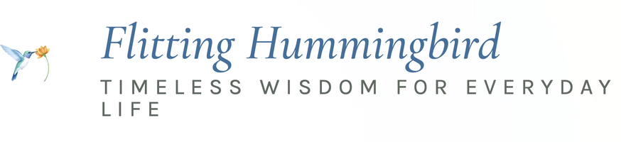
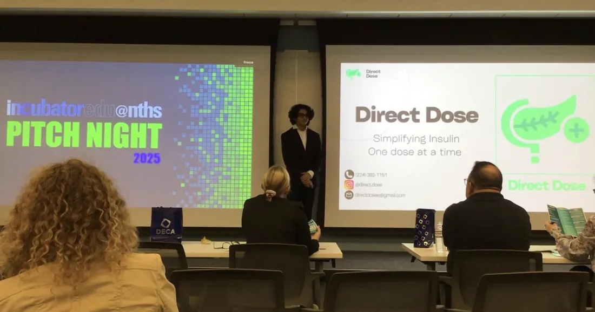
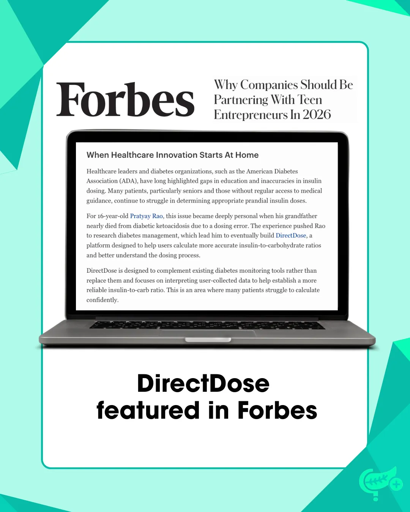

DirectDose so far
- ~30nations
- 150k+people reached
- 1M+meals tracked
- $11k+raised
Our partners

Diabetes, start to finish.
Sugar is fuel.
Glucose rides your blood. Insulin lets it into your cells. In diabetes that handoff breaks, and sugar piles up. 1
Two ways it breaks.
- Type 1
- Little or no insulin is made. Insulin is required.
- Type 2
- Insulin stops working well. Lifestyle, medication, sometimes insulin.
Three nutrients. Three speeds.
Carbs hit hardest and fastest. Fat delays the rise. Protein can show up hours later. 2
Not all carbs act alike.
Juice beats whole fruit to your blood. White bread can spike like sugar. Fiber slows everything.
20% lower glucose response from low-GI meals with the same carbs. 3
What's on your plate changes the ride.
Rice by itself turns into sugar fast. Add chicken, beans, or veggies and the sugar arrives slower. Greasy food like pizza is sneaky: the sugar shows up hours later. 2
Eating your veggies and protein first, then the carbs, can make the rise smaller. It never replaces insulin. 7
Your body is one of a kind.
46,898 meals. Scientists checked that many in 800 people. The same food raised everyone's blood sugar by a different amount. 8
Sleep, stress, being sick, and exercise change your numbers too. Write down what you eat and what your meter says. After a few days you'll see your own pattern.
Insulin has two jobs.
Basal is a slow, steady drip. It works all day and all night, even while you sleep.
Bolus is a quick extra dose. You take it for meals, or to bring a high number down. Too much can make your blood sugar drop dangerously low. 9
Insulin needs a head start.
Food reaches your blood fast. Insulin from a shot is slower. That's why many people take it 10 to 20 minutes before they eat. 10
If you take insulin and then don't eat soon, you can go low. Use the timing your care team gave you.
Let a calculator do the math.
A dose takes a few steps of math, and one slip changes the answer.
Doctors use a blood test called A1C. It shows your average blood sugar over about 3 months. Lower is usually better. In a study of 218 adults, more people improved their A1C with a dose calculator than with math by hand. 11
A calculator only knows what you type in. Use the settings your doctor gave you.
Stay in the band.
Doctors like blood sugar to stay between 70 and 180 most of the day. Under 70 is low and needs fast sugar. Over 180 is high.
For many adults the goal is more than 70% of the day in the band, and less than 4% under 70. 12
Targets differ for kids, older adults, and pregnancy.
112 mg/dL
That's the whole guide.
References (12)
DirectDose is built on published medical research, but it is not medical advice and can't replace your doctor. Follow your prescribed plan and talk to your diabetes care team before changing a dose or its timing.
Meal dose
How this is calculated
Dose = carbs ÷ carb ratio + (blood sugar − target) ÷ correction factor − insulin on board, rounded down. Under 70 mg/dL there is no dose.
- Walsh, Roberts, Bailey. Guidelines for optimal bolus calculator settings in adults. J Diabetes Sci Technol, 2011. Read
- Ziegler et al. Use of an insulin bolus advisor improves glycemic control. Diabetes Care, 2013. Read
- Bell et al. Impact of fat, protein, and glycemic index on postprandial glucose control. Diabetes Care, 2015. Read
- American Diabetes Association. Standards of Care in Diabetes 2025, Section 6. Read
- USDA FoodData Central. Open
This tool applies the settings you enter. It doesn't replace your care team.
Basal insulin
Where these numbers come from
American Diabetes Association, Standards of Care in Diabetes 2025, Section 9. Type 1: a typical start is 0.5 units per kg per day, with about half as basal. Type 2: start at 10 units or 0.1 to 0.2 units per kg, then adjust in small steps toward the fasting target. Read
Medically backed, not medical advice. Your prescriber sets your dose.
Find my ratio
Where this method comes from
- Start in range with no insulin on board, eat a low-fat counted meal, and compare the later reading with the starting one. A good ratio brings you back to within about 30 mg/dL. Change in small steps. Walsh and Roberts, Carb Factor checking tool. Read
- Repeat the test to confirm before changing anything, and stop for any low. mySugr, How to test your insulin to carbohydrate ratio. Read
- Starting estimate when there is no prescribed ratio (500 rule) and dosing formulas. Walsh, Roberts, Bailey. J Diabetes Sci Technol, 2010. Read
Medically backed, not medical advice. Tell your care team before you change how you dose, and share these results with them.
Today's meals
Where these goals come from
- Protein: 1.2 to 1.6 g per kg of body weight a day. Added sugar: under 10 g per meal. Saturated fat: under 10% of calories. Limit refined carbs and highly processed foods. Dietary Guidelines for Americans, 2025–2030. Read
- Carbs, fat and fiber: the FDA Daily Values used on food labels, scaled to your calories (275 g carbs, 78 g fat and 28 g fiber at 2,000 calories). Carbs are treated as an upper limit, not a target. Read
- No single eating pattern is right for everyone with diabetes. Plans should fit your preferences, culture and goals, with fewer refined carbs and added sugars. Evert et al., Nutrition Therapy for Adults With Diabetes or Prediabetes. Diabetes Care, 2019. Read
- Glycemic index ratings follow the International Tables of Glycemic Index and Glycemic Load Values. Atkinson et al. Am J Clin Nutr, 2021. Read
- More fiber and whole grains improve blood sugar control. Reynolds et al. PLOS Medicine, 2020. Read
- Fat and protein can push blood sugar up hours after a meal. Bell et al. Diabetes Care, 2015. Read
Medically backed, not medical advice. Goals are for adults. Meal values are estimates, so check the carbs on your own plate before you dose. Children, pregnant people, and anyone with kidney disease should get goals from their care team.
About
It started with my grandfather.
Guru Thatha nearly died from diabetic ketoacidosis after an insulin dosing error.
Insulin math is hard. One wrong number can put someone in the hospital. I started reading everything I could about how doses are worked out, and then I built the tool I wish he'd had.
DirectDose is free. It helps you count the carbs in a meal, work out a dose from the settings your doctor gave you, and find the carb ratio that fits your body.
Pratyay Rao, founder
Along the way

In the press

DirectDose is built on published medical research. It is an education and math tool, not medical advice, and it is not a substitute for your doctor.